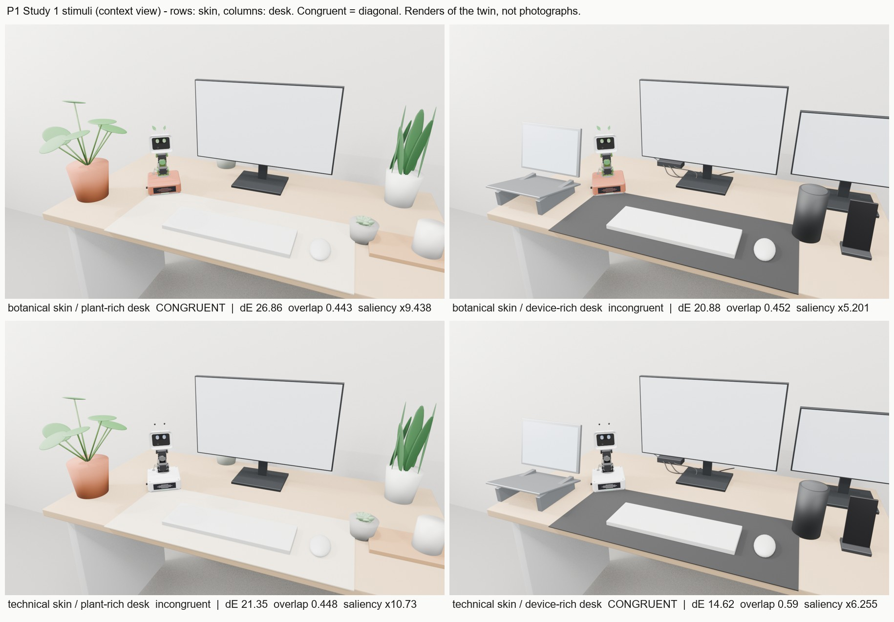
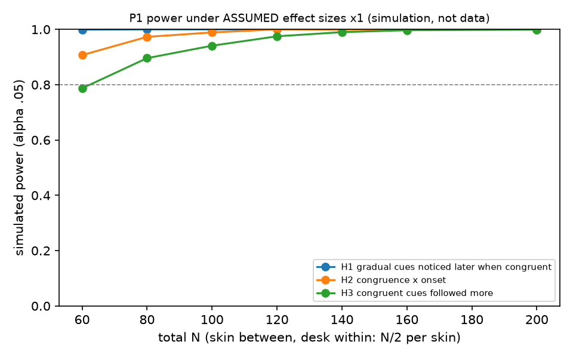
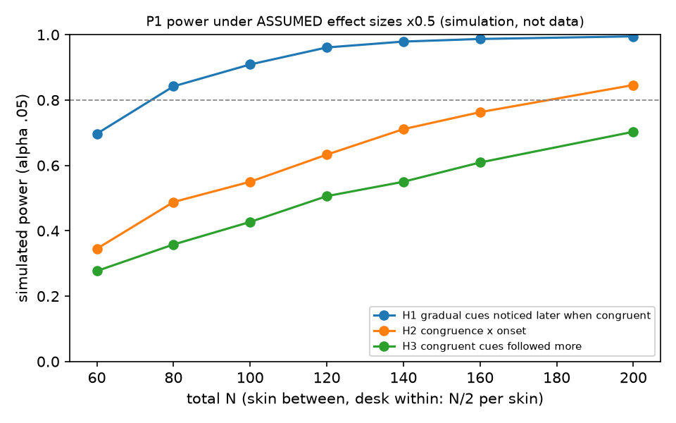

Fits in, stands out? What a desk robot's fit with its workspace costs and buys
한 줄 요약. 책상과 잘 어울리는 로봇은 천천히 처지는 신호를 더 늦게 알아차리게 하지만, 알아차린 뒤에는 더 잘 따르게 한다. 그리고 움직임을 갑자기 시작하면 늦게 알아차리는 비용이 사라진다 — 이것이 첫 논문(P1)의 논지입니다.
이 페이지의 초록은 실험 전에 쓴 초안입니다. [RESULT …] 표시는 아직 측정하지 않은 자리입니다. 아래의 계산(자극 점검, 검정력 시뮬레이션)은 사람 실험이 아니라 디지털 트윈과 가정에 기반한 계산입니다.
P1 · Abstract target: ACM/IEEE HRI or CHI
Fits In, Stands Out? Workspace Congruence Trades the Noticeability of a Desk Robot's Posture Cues for Their Uptake
A desk robot that coaches posture faces two demands that may pull against each other: it should belong in a person's workspace for weeks, and its cues should be noticed while the person is busy with something else. Research on scene perception suggests that objects which fit their surroundings attract less attention, and that slow changes can go unnoticed altogether; research on human–robot interaction suggests that robots whose appearance fits the task and setting are trusted and obeyed more. We bring these together in one prediction: a robot whose form is congruent with its workspace is noticed later when it cues gradually, but its cues are followed more often — and an abrupt onset of motion removes the noticing cost. A six-joint desk robot with identical joints, motions and display face wore either a botanical skin or a technical skin (between participants) and stood on a plant-rich desk and on a device-heavy desk (within participants), so that congruence is the skin × desk interaction rather than a property of either skin. While participants transcribed text, the robot answered their slouching with gradual or abrupt cues. [RESULT: N = …; congruent pairings were noticed … s later for gradual cues (gaze to robot), not for abrupt cues; cues were followed in …% vs …%; typing speed …]. We argue that spatial harmony is a design dimension with a measurable attentional price, and that the timing of motion onset is the lever that lets a designer keep the harmony and pay the price only when a cue matters.
Why the prediction goes both ways. Objects that do not fit a scene draw more and longer fixations (Loftus & Mackworth, 1978; Henderson et al., 1999), and changes slow enough to make no transient can go unnoticed (Simons, Franconeri & Reimer, 2000) — so a robot that blends in should be noticed later. People comply more with a robot whose demeanour matches the task (Goetz, Kiesler & Powers, 2003) — so it should be followed more. The onset of motion captures attention automatically (Abrams & Christ, 2003) — so an abrupt start should remove the noticing cost.
Hypotheses (pre-registration draft)
Congruent pairings: botanical skin on the plant-rich desk, technical skin on the device-heavy desk.
Prediction
Refuted if
H1 noticing cost
For gradual cues, time-to-notice is longer in congruent than in incongruent pairings.
The congruence contrast on log time-to-notice of gradual cues is ≤ 0 or not significant (α = .05).
H2 onset removes it
The congruence effect is larger for gradual than for abrupt cues; for abrupt cues it is practically zero.
Congruence × onset is not significant, or the abrupt-cue effect lies outside ±0.10 log units in an equivalence test.
H3 uptake benefit
Once noticed, cues are followed (posture corrected within 60 s) more often in congruent pairings, and the robot is rated less annoying.
The congruence contrast on the proportion followed is ≤ 0 or not significant.
H4 exploratory
Abrupt cues cost more typing in the 30 s after the cue than gradual cues.
— reported, not confirmatory
Each part can fail on its own, and each failure says something to designers: H1 without H3 means fitting in only hides the robot; H3 without H1 means fitting in is free; H1 without H2 means the cost must be bought back with amplitude, light or sound.
Design
Skin (botanical / technical) — between participants: the same body, joints, motions and face, only the exchangeable shell parts differ.
Desk (plant-rich / device-heavy) — within participants, two 25-min blocks, order counterbalanced.
Cue onset (gradual sag / abrupt start then sag) — within blocks, 8 cues per block, triggered by the participant's slouch.
Measures: time to the first glance at the robot (webcam gaze), posture correction within 60 s, annoyance and perceived fit, typing speed, and the robot's colour contrast and saliency in each pairing as covariates.
N = 100 (50 per skin), pre-registered analysis with mixed models.
Plant-rich desk
Device-heavy desk
Botanical skin
congruent
incongruent
Technical skin
incongruent
congruent
Congruence is the interaction, so the greenness, size or motion of one skin cancels out.
Study 1 stimuli (renders of the digital twin)

Rows: skin. Columns: desk. Congruent pairings on the diagonal. Study 1 asks 80 people online how well each robot fits each desk before any lab work; the lab study goes ahead only if the predicted skin × desk pattern appears.
Study 0 · Does visual similarity sneak in with congruence?
A congruent robot might be noticed later simply because it has less colour contrast with its desk. We measured, in the seated view, the robot's contrast with its surroundings and its spectral-residual saliency.
Pairing
Congruent
Silhouette px
ΔE vs ring
Palette overlap
Saliency ×
botanical / plant-rich
yes
36,720
26.9
0.44
9.4
botanical / device-heavy
no
36,720
20.9
0.45
5.2
technical / plant-rich
no
36,397
21.4
0.45
10.7
technical / device-heavy
yes
36,397
14.6
0.59
6.3
Reading. The two skins' silhouettes differ by 0.9 %. Congruent minus incongruent: ΔE −0.4, saliency −0.12, palette overlap +0.07 — near zero, while the desk itself changes saliency by about 4×. In these stimuli low-level similarity is not confounded with congruence, so a noticing effect could not be explained by contrast alone; the price is that they test only the semantic route of H1.
Sample size (simulation under assumed effects)

Desk within participants, assumed effects.

The same with every effect halved.
Total N
Between-subjects 2 × 2 H1 / H2 / H3
Desk within H1 / H2 / H3
Desk within, effects halved H1 / H2 / H3
60
.66 / .65 / .59
1.00 / .91 / .79
.70 / .34 / .28
100
.88 / .85 / .82
1.00 / .99 / .94
.91 / .55 / .43
200
.99 / .99 / .98
1.00 / 1.00 / 1.00
.99 / .85 / .70
Assumptions, not data: gradual-cue median time-to-notice 15 s, abrupt 2.5 s; congruence +42 % on gradual noticing; uptake 55 % → 68 %. A fully between-subjects design was rejected: with half-size effects even N = 200 reaches only .5–.6.
Three more papers the robot can carry
P2 · Expressing Big Emotions in a Small Range: Constraint-Aware Flow Matching Keeps a Desk Robot Legible Where Clipping Does Not
Low-cost desk robots must express emotion within joint ranges far smaller than the motions animators or demonstrators produce. The usual remedy — clip or scale the motion to the limits — is safe but may destroy what the motion was meant to say. We study this trade-off on a six-joint desk robot with a parametric display face. Building on flow-matching expression generators (Wang et al., 2025; ProAct, 2026) and on constraint-satisfying sampling (SafeDiffuser), we train a few-step flow model on [RESULT: n] demonstrated and authored motions and compare four ways of meeting the robot's joint, combined-pose and torque limits: hard clipping, uniform time-and-amplitude scaling, guidance during sampling, and guidance with a final projection. [RESULT: x % of demonstrated frames exceeded the everyday range.] In an online study (N = [RESULT]) with twin renders, and a lab study with the robot (N = [RESULT]), recognition of six target emotions was [RESULT] for guided samples, [RESULT] for clipped and [RESULT] for scaled ones, against [RESULT] for the unconstrained motion in simulation; face-only and body-only conditions separate the two channels. All constrained methods had zero limit violations by construction. We report which emotions survive a small range and which do not.
P3 · Tracking Error Is Not What People See: A Perceptual Error Metric for Expressive Motion on Low-Cost Servos
Character robots are animated in simulation and played on hobby-grade actuators that lag, overshoot and oscillate. Engineers minimise tracking error; observers judge whether the motion still means what the animator intended. Following Reitsma and Pollard's perceptual metrics for animation, we measure observers' thresholds for three actuator artefacts — latency, overshoot and residual head oscillation — on expressive motions of a six-joint desk robot built from dual-axis smart servos, first with controlled degradations in a calibrated digital twin (N = [RESULT]) and then live on the robot (N = [RESULT]). From the thresholds we build a perceptually weighted error. Across [RESULT: n] motion × controller conditions, the weighted error explained [RESULT: R²] of the variance in "as intended" ratings against [RESULT: R²] for RMS tracking error. Compensating only the supra-threshold components recovered [RESULT %] of intended readings at [RESULT] of the effort of full compensation.
P4 · Does a Robot's Nudge Wear Off? A Micro-Randomised Trial of a Desk Character's Posture Cues
Embodied coaches are often assumed to keep their effect better than phone notifications, but the claim is rarely tested at the level of single prompts over weeks. We ran a micro-randomised trial with one six-joint desk robot moved between [RESULT: n] participants' desks for [RESULT: k] weeks each. At every decision point at which the on-device pose estimate showed a slouch, the robot was randomised to cue with an expressive body-and-face motion, cue with the face only, or not cue; a second randomisation chose between a moment predicted to be interruptible and a random moment. The proximal outcome was a posture correction within five minutes. Across [RESULT: N] decision points, a body-and-face cue raised the probability of correction by [RESULT] over no cue; the effect [RESULT: decayed by x % per week / did not decay]. Images were never stored. We discuss what an embodied cue adds to just-in-time interventions and the ethics of a cute agent that nudges.
Self-review · are these valid theses?
As first proposed
Verdict
What changed
P1
Form–space congruence changes how fast a posture cue is noticed and followed
valid
Congruence became the skin × desk interaction; two competing predictions; then motion onset added as the lever (H2), desk moved within participants after the power simulation, and colour contrast measured as a covariate.
P2
The first few-step flow model for a low-cost robot's body and face that never breaks its limits
not valid as written
"First" is false: flow matching for robot emotional expression incl. the face (Wang et al., 2025), streaming flow gestures (ProAct, 2026) and constraint-guaranteed sampling (SafeDiffuser) exist. Narrowed to: in a small range, constraint handling inside the sampler keeps emotions legible where clipping does not.
P3
At what lag, overshoot and wobble does a cheap-servo character stop reading as intended?
a question, not a thesis
Timing, jitter and delay perception are each studied. Reframed as a claim that can fail: a perceptually weighted error predicts what people see better than tracking error.
P4
Predicting slouch and interruptibility beats reacting, and lasts past novelty
too big and costly
Needs 8–12 robots and wearables. Reframed as a single-robot micro-randomised trial with one primary claim.
Recommended order: P1 → P3 → P2 → P4. Prior work was checked from abstracts and publisher pages; each "we did not find" must be re-searched before submission.
Key references
Abrams, R. A., & Christ, S. E. (2003). Motion onset captures attention. Psychological Science, 14(5).
Simons, D. J., Franconeri, S. L., & Reimer, R. L. (2000). Change blindness in the absence of a visual disruption. Perception, 29.
Goetz, J., Kiesler, S., & Powers, A. (2003). Matching robot appearance and behavior to tasks to improve human-robot cooperation. RO-MAN.
Loftus, G. R., & Mackworth, N. H. (1978); Henderson, J. M., Weeks, P. A., & Hollingworth, A. (1999) — semantic consistency and eye movements in scenes.
Wang, C.-A., et al. (2026). SitBot: A posture-mimicking robot to reduce slouching. ICSR 2025, LNCS. · Owro (2022), a robot for sitting posture training, UTS.
Wang, C., Gienger, M., & Zhang, F. (2025). Generation of real-time robotic emotional expressions learning from human demonstration in mixed reality. arXiv 2508.08999. · ProAct (2026), arXiv 2602.14048. · Xiao et al., SafeDiffuser, ICLR 2025.
Reitsma, P. S. A., & Pollard, N. S. (2003). Perceptual metrics for character animation. SIGGRAPH. · Zhou, A., et al. (2017). Expressive robot motion timing. HRI.
Klasnja, P., et al. (2015). Microrandomized trials. · Nahum-Shani, I., et al. (2018). Just-in-time adaptive interventions. · Lacey, C., & Caudwell, C. (2019). Cuteness as a 'dark pattern' in home robots. HRI.
Hou, X., & Zhang, L. (2007). Saliency detection: a spectral residual approach. CVPR.
Drafts written by the Notifyi project's AI lead for the team. Not peer-reviewed. No participant has been run; the robot has not been built.
기준 부품 · 전원 안내
모델링 기준 부품 (RC3와 캐릭터 스킨 Sprout · Tech · Hop · Dial)
디스플레이
Adafruit 1.9" 320 × 170 IPS TFT (ST7789), Adafruit 제품 5394. 표시 영역 42.72 × 22.70 mm, 보드 57.2 × 36.6 × 5.2 mm, 장착 구멍 간격 52.0 × 31.7 mm. Raspberry Pi에서 SPI로 구동. 얼굴은 2 mm 스모크 아크릴판과 0.2 mm 검은 마스크 뒤에 있습니다.
카메라
Adafruit Ultra Tiny USB Camera, Adafruit 제품 5733. 26 × 8 × 10 mm 외형으로 모델링했고, 얼굴판 아래쪽 Ø 6.5 mm 렌즈 구멍으로 봅니다. 일체형 USB-A 케이블(Ø 2.1 mm)로 Pi에 연결.
제어 · 모터
ROBOTIS OpenCR 1.0 (공식 RevH STEP 형상) + Raspberry Pi 3 Model B+. 모터는 ROBOTIS DYNAMIXEL 2XL430-W250-T 4개 = 관절 6개 (공식 STEP 형상).
책벌레 (worm_C4, worm_B7)
이전 단계의 연구 모델입니다. 보유 중인 USB 웹캠(모델 미확인, 72 × 25 × 27 mm 막대형으로 근사)을 기준으로 했고 디스플레이는 없습니다.
전원과 하단 베이스
현재 베이스의 배터리 칸은 2S LiPo 7.4 V 1500 mAh (70 × 35 × 18 mm, 70 g, Deans T 플러그) 기준입니다. 일부 배선 표기에는 3S 11.1 V가 남아 있어 전원 방식은 아직 확정되지 않았습니다.
7.4 V는 모터 입력 범위(6.5–12 V)와 OpenCR 입력 범위(5–24 V) 안에 있지만, 모듈 4개를 동시에 구동할 때 감당하는지는 측정하지 않았습니다.
배터리 종류 · 크기, DC 어댑터 사용 여부, 충전 잭 위치에 따라 하단 베이스의 세부 출력 부품 — 베이스 섀시, 배터리 트레이, 포트판(Ø 8.4 mm 잭 구멍, 판 뒤 여유 4.5 mm), 전면판, Pi 브리지, 베이스 커버 — 의 형상이 바뀔 수 있습니다. 출력 도면 탭에서 이 부품들에 표시해 두었습니다.
실물 출력, 조립 맞춤, 전체 동작, 전기 결선은 아직 검증되지 않았습니다 (RC3 기록 기준).